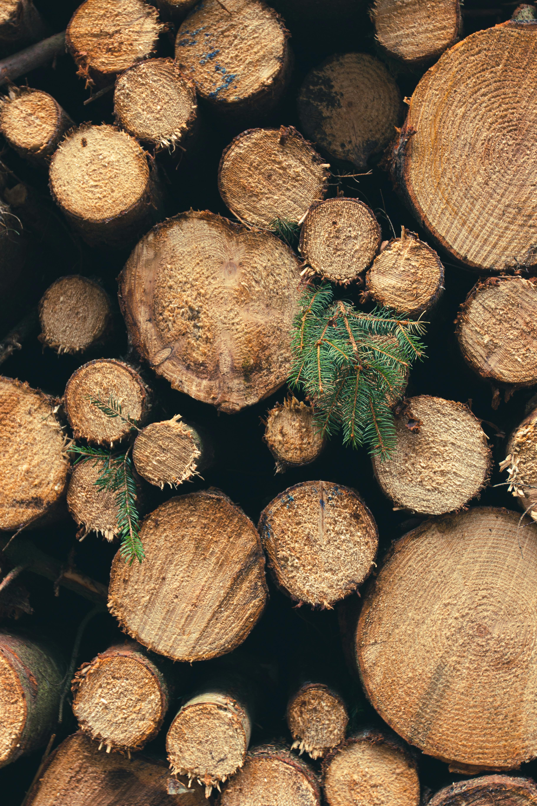

Sustainable Forestry
Sustainable forestry means managing forests in a way that will keep forests healthy and usable for local communities and society as a whole for generations to come .To make consistent change, sustainable forestry requires a set of practices that promote environmental responsibility, social equity, and viable economic growth.
Why is Sustainable Forestry Important?
Identify protected areas, Preserve biodiversity in forests, Maintain high conservation value forests and Reduce forest conservation are just few of the reasons sustainable foresting is more important than ever before.

Sustainable forestry practices
- Follow local laws and maintain a sustainable forestry certification.
- Define tenure and use rights.
- Protect indigenous people's right.
- Priorities community relations and workers' rights.
- Balance forest resources and benefits with societal demand.
- Minimize environmental impact.
- Have a management plan.
- Monitor and assess regularly.
- Maintain high conservation value forests.
- Manage plantations with precaution.
What is Reforestation?
Reforestation can be defined as the process of replanting trees in areas that have been affected by natural disturbances like wildfires, drought and insect and disease infestations and unnatural ones like logging, mining, agricultural clearing and development.
Why Reforestation?
Reforestation is a very important procedure in order to save our planet.This is needed as huge forests are being destroyed or damaged due to various reasons on a daily basis. By planting trees in areas that have been degraded or deforested, reforestation helps the environment by guaranteeing or accelerating the re-establishment of healthy forest structure by regrowing the forest canopy and preserving biodiversity within the ecosystem.
Reforestation Benefits
- Helps carbon sequestration by fixing atmospheric carbon dioxide in their leaves, trunks, and roots
- Removes air pollutants by absorbing them into their leaves and bark
- Prevents soil erosion by growing roots that hold the soil together
- Provides habitat for over 80% of the world’s terrestrial biodiversity
- Acts as natural air conditioners by reducing ambient air temperatures by up to 8° Celsius
- Reduces the impact of global warming and climate change
- Helps to protect endangered species
- Filters our drinking water through their roots
- Prevents floods and landslides by absorbing water and slowly releasing it via transpiration
How You Can Help
Join the movement for a greener planet! By planting trees, supporting forest products produced in a sustainable way, reducing paper waste, and spreading awareness about forest conservation, you can make a difference. It does not matter even if it is in small ways: volunteer in local tree-planting initiatives, donate to reforest programs, or choose eco-friendly products. All of these actions will help in restoring our forests and securing our future.
Get Involved